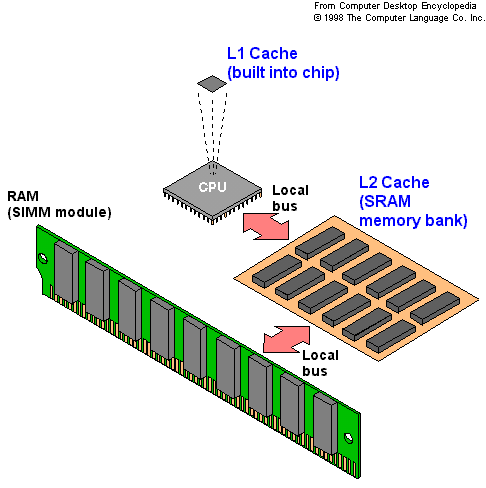

IRQ (Interrupt ReQuest)
Hardware interrupt request on a PC. There are 16 IRQ lines used to signal the CPU that a peripheral event has started
or terminated. Except for PCI devices, two devices cannot use the same line. If a new expansion board is preset to the
IRQ used by an existing board, one of them must be changed. This was an enormous headache in earlier machines.
Starting with the 286, two 8259A controller chips are cascaded together for a total of 16 IRQs (the first PCs had only
one chip and eight IRQs). However, IRQ 2 is lost because it is used to connect to the second chip. All the IRQs except
for 10, 11, 12 and 15 are preassigned. If a second parallel port is not used, IRQ 5 is available. IRQ 9 is also often
available as most VGA cards do not require an IRQ. Thus IRQs 5, 9, 10, 11, 12 and 15 are arbitrarily used for scanners,
SCSI boards, CD-ROM controllers, sound boards and any other peripheral that can be attached to a PC. They become the
"IRQ battleground."
IRQ Assignment
** Indicates no preassignment, for general use
PC CPU (Central Processing Unit)
The brains of the PC is a CPU, or processor. IBM PCs are those from the Intel 8086 family (x86) of microprocessors or
from a company that makes x86-compatible CPUs, such as AMD (Advanced Micro Devices) and Cyrix Corporation.
IBM also makes its own x86-compatible chips. Following are the major classes of PCs, starting with the very first models.
XT CLASS - 8086, 8088 The original PC launched by IBM in 1981 used the 16-bit 8088 CPU.
AT CLASS - 286 First used in the IBM AT in 1984, 286's 16-bit CPU can address up to 16 MB of memory.
386, 486 & Pentium First used by Compaq in 1986, the 386 introduced an advanced architecture that has been carrier forth in all subsequent chips, including the 486 and Pentium models. The 386 brought a 32-bit mode of operation and the ability to address four gigabytes of memory, although even today, most PC motherboards cannot hold anywhere near that amount of memory. The 32-bit mode was rarely used until Windows 95 was introduced.
In 1993, the Pentium was introduced and is now the entry level CPU in desktop and laptop PCs. The Pentium Pro, introduced in 1995, is optimized for 32-bit operating systems and applications. Users running Windows 3.1 are better off with the straight Pentium.
The Pentium MMX and the Pentium II are Pentium and Pentium Pro CPUs respectively with additional instructions for speeding up multimedia applications.
K5 A Pentium-class CPU chip from AMD. K5 chips are available in models that rival a 166MHz Pentium chip and plugs into the Socket 7 processor socket on motherboards.
K6A Pentium II-class CPU chip from AMD. The first models were introduced in 1997 at 166MHz, 200MHz and 233MHz clock speeds. The K6 chip contains the MMX instruction set used in Pentium MMX and Pentium II CPUs and plugs into the Socket 7 processor socket on motherboards.
K6-2 Introduced in 1998, improves performance and adds AMD's 3DNow 3-D instructions for faster rendering of games and animation.
XeonA Pentium II CPU chip designed for server and high-end workstation use. Xeon chips plug into Slot 2 on the motherboard and run the L2 cache at the same speed as the CPU. Introduced in the summer of 1998 starting at 400MHz, Xeon includes additional error checking and system management features as well as an L2 cache from 512MB to 2MB. It introduces the System Management Bus (SMBus) interface, which includes a Processor Information ROM (PIROM) that contains data about the processor and an empty EEPROM that can be used by manufacturers or resellers to track their own information such as usage and service information.
CeleronA family of low-cost Pentium II chips from Intel that was introduced in the summer of 1998. The first model (266MHz) does not include an external L2 cache and runs slower than counterpart chips with the cache. Subsequent models have 128KB of L2 cache. Celeron chips are designed for consumer PCs.
68000 A family of 32-bit microprocessors from Motorola that are the CPUs in Macintoshes and a variety of workstations. It is also known as the 68K or 680x0 series.
Model.....BusSize...Max RAMApple has migrated all Macs from the Motorola 680x0 CPU family to the PowerPC RISC chip.
RISC (Reduced Instruction Set Computer) A computer architecture that reduces chip complexity by using simpler instructions.
RS/6000 (RISC System/6000) A family of RISC-based workstations and servers from IBM that use the AIX (UNIX) operating system. They are widely used in scientific, industrial and commercial applications. Introduced in 1990, the first RS/6000s used IBM's POWER chip. Starting in 1993, the line began to migrate to the PowerPC chip, which is a single-chip version of the POWER architecture.
Soon to be released CPUs:
K7 A high-performance Pentium II class CPU from AMD that is expected in 1999. It will require different chipsets and introduces a new motherboard socket known as Slot A. Clock speeds are expected to be at least 500MHz.Pentium III Featuring improved 3-D graphics capabilities aimed to improve the Internet experience. The chip will be introduced at clock speeds of 450 MHz and 500 MHz in 1999. When Intel shifts from 0.25-micron to 0.18-micron technology by the second half of 1999, the Pentium III is expected to reach clock speeds of 600 MHz and higher.
As different as they get, all CPU processors (so far) are placed onto the motherboard through a socket mount.
Socket Mount A circuit board packaging technique in which a chip or component plugs into a socket. Socket mount devices can be removed and replaced by the user, although the flexible pins on some types of chips make them difficult to insert. The following list popular types of CPU socket mountings:
Socket 7 - Receptacle on the motherboard that holds a Pentium CPU chip. It is also used to hold Pentium chip clones such as the 5x86, 6x86, K5 and K6.
Socket 8 -Receptacle on the motherboard that holds a Pentium Pro CPU chip.
Slot 1 - Receptacle on the motherboard that holds an Intel Single Edge Contact (SEC) cartridge.
The cartridge contains up to two CPUs and an L2 cache, which runs at half the speed of the CPU. It plugs into the slot with a 242-pin edge connector. The Pentium II uses the SEC and Slot 1.
Slot 2 - An enhanced Slot 1, which uses a 330-pin Single Edge Contact (SEC) cartridge that holds up to four processors. The L2 cache runs at full processor speed. Intel's Xeon chips were the first to use Slot 2.
L2 cache - Memory cache that is external to the CPU chip.
SMBus - (System Management Bus) A bus used for communicating system requirements. It is used among other things to send charging requirements to the host CPU from the battery.
Cache
Pronounced "cash." A temporary storage area for instructions and data that is closer to the CPU's speed.
The larger the cache, the faster the performance, since there is a greater chance that the instruction or
data required next is already in the cache. The chief measurement of a cache is its hit rate, which is the
percentage of all accesses that are satisfied by the data in the cache.
Cache used to refer to only memory and disk caches (explained below) that function as temporary & "look-ahead" storage. With the advent of the Web, the term is used to refer to more permanent storage. When Web pages are "cached" on a server, they can be stored for long periods of time; thus, the term is also used to mean "stored for future use," not just within the current session.

Memory Caches A memory cache, or CPU cache, is a memory bank that bridges main memory and the CPU. It is faster than main memory and allows instructions to be executed and data to be read at higher speed. Instructions and data are transferred to the cache in blocks, using some kind of look-ahead algorithm. The more sequential the instructions in the routine being accessed, and the more sequential the order of the data being read, the more chance the next desired item will still be in the cache, and the greater improvement in performance.
A level 1 (L1) cache is a memory bank built into or packaged within the chip.
A level 2 cache (L2) is a group of memory chips on the motherboard.
Increasing a Level 2 cache may speed up some applications and amount to nothing on others.
Both types are used together. In PCs, the cache is made up of static RAM (SRAM) chips, while dynamic
RAM (DRAM) chips are used for main memory.
Pipeline burst cache - A common type of static RAM chip used for memory caches.
Next Page: A+ Cert CPU table study guide